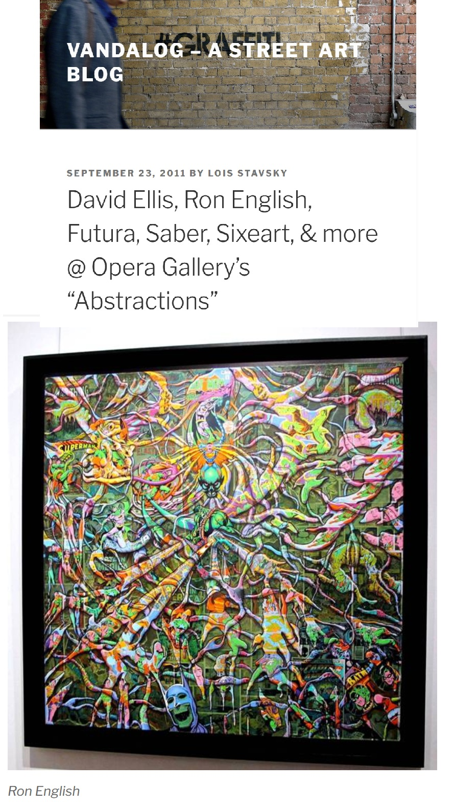

Exhibitions
Lazarus Rising, Elms Lesters Painting Rooms, London, UK, May 8–June 6, 2009.
Abstractions, Opera Gallery, New York, New York, US, September 23–October 16, 2011.
Literature
Ron English, Fauxlosophy (Darlington: Carpet Bombing Culture, 2016), p. 154. ISBN 978-1-908211-45-3.
Ron English, Lazarus Rising (London: Elms Lesters Painting Rooms, 2009), p. 7.
Ron English, Status Factory: The Art of Ron English (San Francisco: Last Gasp of San Francisco, 2014), p. 25. ISBN 978-0867197891.
Ron English, Original Grin: The Art of Ron English (Paris: Cernunnos, 2019), p. 338. ISBN 978-2374950938.
Notes
The work appears in the background in studio photographs published in Arrested Motion, “Studio Visits: Ron English @ Popaganda Headquarters,” May 26, 2009, available here, accessed April 14, 2026.
It also appears in Vandalog’s coverage of Abstractions at Opera Gallery, available here, accessed April 11, 2026.
It also appears in Arrested Motion’s opening and exhibition photographs for Abstractions at Opera Gallery, available here, accessed April 11, 2026.
Ancillary Documentation

